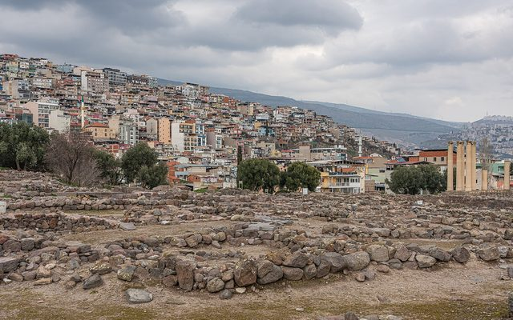
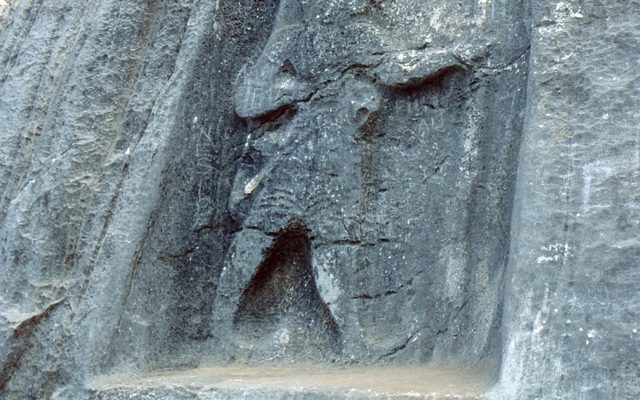

मुखपृष्ठ › प्रांत-दर-प्रांत घूमने की जगहें › इज़मिर
Kültür Varlıkları गाइड में इज़मिर की 43 जगहें हैं: 20 पुरातात्विक स्थल, 18 संग्रहालय, 4 क़िला और ऐतिहासिक इमारत, 1 धार्मिक इमारत। नीचे मुख्य आकर्षण, नक्शा और पूरी सूची है।
⭐ मुख्य आकर्षण

1 · इज़मिर · पुरातात्विक स्थलपर्गामम अक्रोपोलिस
बेर्गामा का अक्रोपोलिस हेलेनिस्टिक पर्गामम राज्य की राजधानी पर्गामम का राजनीतिक और सांस्कृतिक हृदय था, जो मैदान से सैकड़ों मीटर ऊँची खड़ी पहाड़ी पर बना था। अत्तालिद वंश…

2 · इज़मिर · पुरातात्विक स्थलइफ़िसुस
इफ़िसुस प्राचीन काल के सबसे बड़े बंदरगाह-नगरों में से एक और रोमन एशिया प्रांत के सबसे उज्ज्वल केंद्रों में था; पास ही सात आश्चर्यों में से एक, आर्टेमिस का मंदिर खड़ा…

3 · इज़मिर · पुरातात्विक स्थलपर्गामम एस्क्लेपियन पुरातात्विक स्थल
चिकित्सा-देवता एस्क्लेपियस को समर्पित पर्गामम का एस्क्लेपियन प्राचीन दुनिया के सबसे प्रसिद्ध उपचार-केंद्रों में से एक था। रोगी पवित्र झरनों का उपयोग करते थे और स्नान,…
🗺 नक्शे पर
📍 सभी जगहें (43)
पुरातात्विक स्थल (20)
पर्गामम अक्रोपोलिसपुरातात्विक स्थल · UNESCOइफ़िसुसपुरातात्विक स्थल · UNESCOपर्गामम एस्क्लेपियन पुरातात्विक स्थलपुरातात्विक स्थल · UNESCO बेर्गामा लाल बेसिलिकापुरातात्विक स्थल · UNESCO
बेर्गामा लाल बेसिलिकापुरातात्विक स्थल · UNESCO स्मिर्ना अगोरा पुरातात्विक स्थलपुरातात्विक स्थल
स्मिर्ना अगोरा पुरातात्विक स्थलपुरातात्विक स्थल अयासुलुक संत जॉन बेसिलिकापुरातात्विक स्थल
अयासुलुक संत जॉन बेसिलिकापुरातात्विक स्थल इफ़िसुस ढलान-घरपुरातात्विक स्थल
इफ़िसुस ढलान-घरपुरातात्विक स्थल एरिथ्राय प्राचीन नगरपुरातात्विक स्थल
एरिथ्राय प्राचीन नगरपुरातात्विक स्थल
पुराना स्मिर्नापुरातात्विक स्थल
कराबेल शैल उभारपुरातात्विक स्थल क्लारोस पुरातात्विक स्थलपुरातात्विक स्थल
क्लारोस पुरातात्विक स्थलपुरातात्विक स्थल क्लाज़ोमेनाई पुरातात्विक स्थलपुरातात्विक स्थल
क्लाज़ोमेनाई पुरातात्विक स्थलपुरातात्विक स्थल कोलोफ़ोनपुरातात्विक स्थल
कोलोफ़ोनपुरातात्विक स्थल किमे प्राचीन नगरपुरातात्विक स्थल
किमे प्राचीन नगरपुरातात्विक स्थल लेबेडोसपुरातात्विक स्थल
लेबेडोसपुरातात्विक स्थल मेट्रोपोलिस पुरातात्विक स्थलपुरातात्विक स्थल
मेट्रोपोलिस पुरातात्विक स्थलपुरातात्विक स्थल नोतियोन प्राचीन नगरपुरातात्विक स्थल
नोतियोन प्राचीन नगरपुरातात्विक स्थल फ़ोकाया (फ़ोचा)पुरातात्विक स्थल
फ़ोकाया (फ़ोचा)पुरातात्विक स्थल तेओस पुरातात्विक स्थलपुरातात्विक स्थल
तेओस पुरातात्विक स्थलपुरातात्विक स्थल येशिलोवा होयुकपुरातात्विक स्थल
येशिलोवा होयुकपुरातात्विक स्थलसंग्रहालय (18)
 इफ़िसुस संग्रहालयसंग्रहालय
इफ़िसुस संग्रहालयसंग्रहालय अहमत पिरिश्तिना नगर अभिलेखागार और संग्रहालयसंग्रहालय
अहमत पिरिश्तिना नगर अभिलेखागार और संग्रहालयसंग्रहालय आर्कास कला केंद्रसंग्रहालय
आर्कास कला केंद्रसंग्रहालय बेर्गामा संग्रहालयसंग्रहालय
बेर्गामा संग्रहालयसंग्रहालय बिर्गी चाकिराआ हवेलीसंग्रहालय
बिर्गी चाकिराआ हवेलीसंग्रहालय बोस्तानली खुला पुरातत्व संग्रहालयसंग्रहालय
बोस्तानली खुला पुरातत्व संग्रहालयसंग्रहालय की म्यूज़ियमसंग्रहालय
की म्यूज़ियमसंग्रहालय लतीफ़ े हानिम कोश्क स्मृति गृहसंग्रहालय
लतीफ़ े हानिम कोश्क स्मृति गृहसंग्रहालय तिरे संग्रहालयसंग्रहालय
तिरे संग्रहालयसंग्रहालय चामलिक भाप इंजन संग्रहालयसंग्रहालय
चामलिक भाप इंजन संग्रहालयसंग्रहालय चेश्मे संग्रहालयसंग्रहालय
चेश्मे संग्रहालयसंग्रहालय इज़मिर पुरातत्व संग्रहालयसंग्रहालय
इज़मिर पुरातत्व संग्रहालयसंग्रहालय इज़मिर अतातुर्क संग्रहालयसंग्रहालय
इज़मिर अतातुर्क संग्रहालयसंग्रहालय इज़मिर संस्कृति और कला कारख़ानासंग्रहालय
इज़मिर संस्कृति और कला कारख़ानासंग्रहालय इज़मिर चित्रकला और मूर्तिकला संग्रहालयसंग्रहालयइफ़िसुस अनुभव संग्रहालयसंग्रहालयएगे विश्वविद्यालय प्राकृतिक इतिहास संग्रहालयसंग्रहालयओदेमिश संग्रहालयसंग्रहालय
इज़मिर चित्रकला और मूर्तिकला संग्रहालयसंग्रहालयइफ़िसुस अनुभव संग्रहालयसंग्रहालयएगे विश्वविद्यालय प्राकृतिक इतिहास संग्रहालयसंग्रहालयओदेमिश संग्रहालयसंग्रहालयक़िला और ऐतिहासिक इमारत (4)
 अयासुलुक क़िलाक़िला और ऐतिहासिक इमारत
अयासुलुक क़िलाक़िला और ऐतिहासिक इमारत कादिफ़ेकाले (पागोस पहाड़ी)क़िला और ऐतिहासिक इमारत
कादिफ़ेकाले (पागोस पहाड़ी)क़िला और ऐतिहासिक इमारत निम्फ़ायोन (निफ़) महलक़िला और ऐतिहासिक इमारत
निम्फ़ायोन (निफ़) महलक़िला और ऐतिहासिक इमारत शिरिंजे गाँवक़िला और ऐतिहासिक इमारत
शिरिंजे गाँवक़िला और ऐतिहासिक इमारत